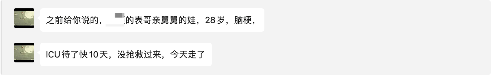
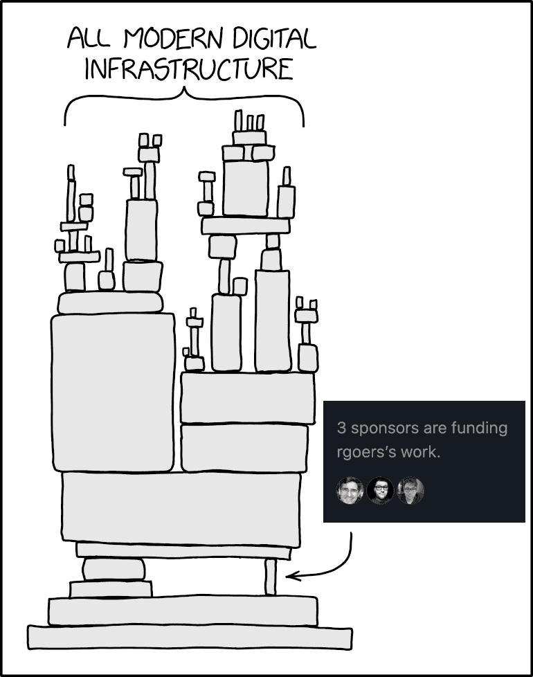
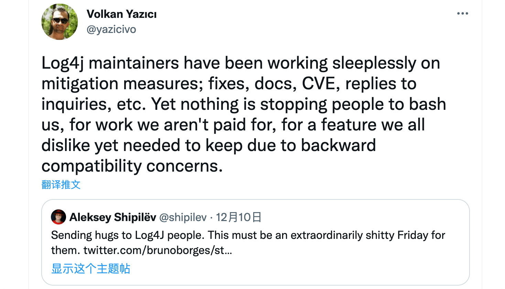
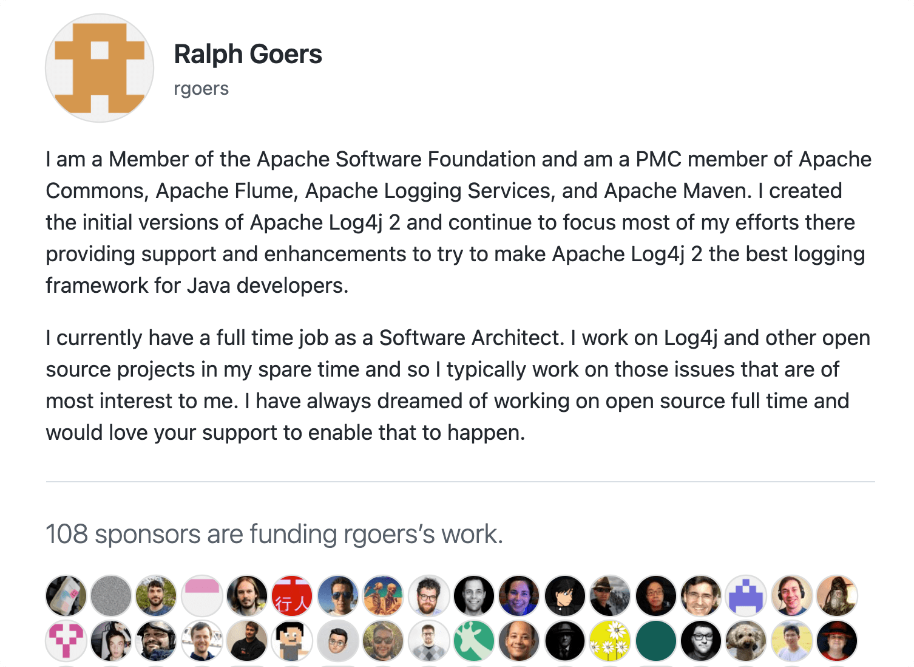
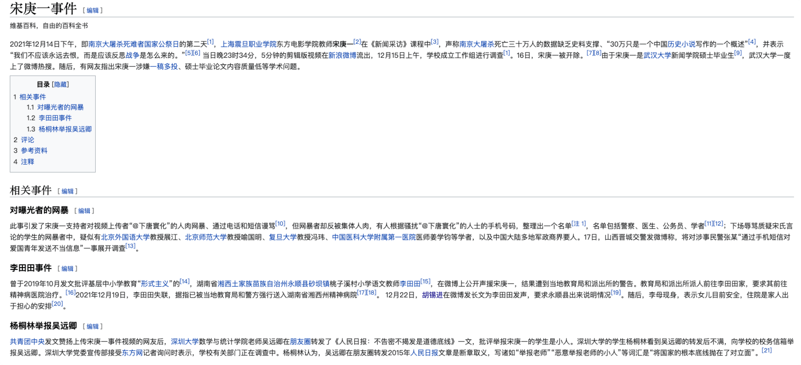

2021 年第四季度总结
这里记录下第四季度自己的一些想法，为了日后翻阅方便！
- 十月
- 慢慢熬夜作死自己
- 踏实下来修炼内功
- 十一月
- 斜率比截距重要
- 真实的例子就发生在你身边
- 十二月
- 抽象化与细节化
- 进入 Web3.0 的时代
- 谷歌 2021 年度搜索
- 为什么比特币会失败
- 开源社区捐赠与回报
- 民主、专政与自由
十月
霜降时节，万物毕成，毕入于戌，阳下入地，阴气始凝，天气渐寒始于霜降。
霜降，是二十四节气中的第十八个节气，秋季的最后一个节气。进入霜降节气后，深秋景象明显，冷空气南下越来越频繁。霜降不是表示“降霜”，而是表示气温骤降、昼夜温差大。就全国平均而言，“霜降”是一年之中昼夜温差最大的时节。

一 慢慢熬夜作死自己
我们每天都会睡觉，但是人为什么要睡觉呢？睡眠非常神秘，虽然我已经睡了一万多次了，但还是看不透睡眠，其仍是难以解释的生物学谜团之一。古往今来的科学家，都曾视图破解睡眠的密码，但都没有成功，所以我们这里也不会聊这个话题。
绝大部分上班族和学生，可能八九点才刚刚结束工作和学习，接下来是一场时间的争夺战。因为白天干了太多 “正事儿” 了，我们不想睡觉，想娱乐下，比如打游戏、看电影、听歌，晚睡都仿佛成为了大部分人的习惯。
- 睡眠是什么
- 昼夜节律 <- 人体生物钟
- 身体内部会持续造成睡眠压力，当清醒的时间越长，压力越大，就会产生困意
- 身体内部的昼夜节律并不是严格按照二十四小时来循环的
- 再有日光的前提下，生物会优先参考自然这种优先级最高的节律
- 睡眠存在两种不同的模式在交替循环：非快速眼动睡眠(前半夜)/快速眼动睡眠(后半夜)
- 非快速眼动睡眠：整理记忆(记忆的剔除)；快速眼动睡眠：加深细节(重要记忆的加固)
- 熬夜的坏处
- 缺乏睡眠会导致抑郁、焦虑、易怒、生命长度
- 熬夜导致没有完整的八小时睡眠，会使加深细节不到位，出现记忆减退
- 随着人长时间的熬夜，人会适应自己的表现受损，警觉性和能量水平降低的情况，就像人可以适应臭味一样
- 人类不能通过补觉来补充缺失的睡眠
- 如何更好的睡眠
- 充电小睡：前半夜进行小睡再熬夜，而不是放到事情处理完之后的后半夜
- 午睡非常重要，有助于减少心血管疾病的发生
- 晚上在不甘心，也一定不要通过手机来获取满足感
现在人最大的问题是无奈，年轻人面临买不起房子、生不起的孩子、被淘汰的高压，三十岁的中年人被老幼两代夹击，好像众生皆苦，人人不易。真正底层的核心是我们白天做了太多的所谓提升自己学习、提高自己赚钱能力的事情，把自己的时间挤占的不成样子。而在空闲时间拿到手机的我们，面对信息流的种种陷阱，早就松懈的经历一不小心就败下阵来，然后我们拼命争取自己的时间，导致熬夜。而熬夜会让生活变得更糟，于是生活持续的暗淡下来。
还记得无数次凌晨关掉手机之后的空虚吗？ 那种生活明明无力改变，却只能打开手机消磨时间的无力感。手机、电脑、电视，该上我们睡前的黑名单了，尽量不要再碰它们。它们给不了我们满足感。我们需要一个心理暗示，我们得做一件事儿告诉自己，我今天好了就到这里结束吧！所以，我们能做的就是每天认真的把睡觉当成头等大事，每天睡够八个小时才是真正的福报。
二 踏实下来修炼内功
多多读书、多多努力，修炼内功，积极进取！
董老师很久都没有写博客了，最新写了一篇名为《聊聊写书、技术会议、知名度和变现》的博文，主要说的是：在工作环境里慢慢的总结出了让自己变优秀的几个因素，其中包含能力和判断力。其实关于这些，我都在之前的地方我都已经听过了，这次算是一次用文字再次表述一遍。
- 写书
- 在国内技术书作者养活不了自己，且技术书非常局限读者圈子。
- 国内没有一个客观的评价体系，所以优先看亚马逊评分，再购买。
- 国内工作环境大背景下，技术书作者普遍能力有限。
- 闷声卖书，及时抽身退出是最好的选择。
- 参加技术会议
- 听过很多道理，依然过不好这一生。
- 别人分享的不在我的领域，没机会遇到、用到，当然听不懂。
- 分享时间有限，其实大部分是蜻蜓点水的炫耀一下，这对于大部分与会者来说没什么价值。
- 越高端、越有教养的人，大都相互支持、抱团发展，因为你好了大家都好。
- 如何提高知名度
- 储备的知识不足造成更新的节奏更跟不上。
- 正反馈太少，达不到预期，没有动力。
- 公司不能作为背书。
- 技术变现
- 能做技术变现：根本原因是抓住知识付费的风口。
说到这里，其实还是多多读书、多多努力，修炼内功，积极进取！不断提高技术品味的过程中，还能洞悉技术和业务的本质，对于各种技术和相关领域的事物都要有自己的观察力和判断力，踏实下来，在自己擅长的垂直方面做到行业头部专家级别才是正途。
十一月
霜降时节，万物毕成，毕入于戌，阳下入地，阴气始凝，天气渐寒始于霜降。
霜降，是二十四节气中的第十八个节气，秋季的最后一个节气。进入霜降节气后，深秋景象明显，冷空气南下越来越频繁。霜降不是表示“降霜”，而是表示气温骤降、昼夜温差大。就全国平均而言，“霜降”是一年之中昼夜温差最大的时节。
一 斜率比截距重要
忘掉 y 轴的截距吧，长远来看，斜率是唯一重要的事情。
如果 x 轴表示时间，y 轴表示你要实现的目标，那么实现目标的过程可以画成一条直线。
这条直线可以用两个变量描述：y 轴截距（直线与 y 轴的交点）和斜率（y 随时间变化的速度）。
如果我们把 y 轴截距看成是你的起点，那么斜率就是你为了实现目标，而适应、学习和付出努力的前进速度。
即使一条线的起点远低于另一条线，只要它的斜率更大，终究会超越前一条线。
你可能听过这样的建议：做一个终身学习者，每天学一点，不断进步。很少有人能够遵循这条建议，因为在开始后的很长时间内，根本看不到有什么效果。时间周期越短，直线看起来越平坦，当你远远落后时，这是非常令人沮丧的。
但是，只要坚持下去，保持向上的斜率，长期以后，你将远远地超越原来的人生道路。
记住，短期总是比我们想象的要长，各种打击足以让你灰心丧气，但是 长期总是比我们想象的要短。
同一个道理，在招聘时，有潜力但经验不足的候选人，长期来看，比经验丰富但潜力不足的候选人，对公司更有帮助。
总之，当事情没有达到你的目标时，不要放弃，每一个伟大的事业都始于一个小小的念头。学习一项新技能，每天进步一点点，短时间内，一切看起来都是老样子，但是随着时间的推移，改进会持续累积起来，进步会越来越明显。
二 真实的例子就发生在你身边
关灯玩手机危害超乎想象，严重者会导致失明！
今天，Miss.Sun 发了一条信息，说是她同事的亲戚突然脑梗过世了，才 28 岁。说是因为最近他们家在装修，还有其他的时候，导致过度劳累，引发的。年纪轻轻的一个人，说走就走了，还是挺可怕的。所以我们应该在有限的时间内，好好保养和维护我们的身体，这样才可以 可持续发展。再说，还有大把的风景需要我们去探索和发现，不是？

现在很多人都习惯了玩手机，可以说是 “机不离手”，当然我也算是其中之一。为了眼睛的健康，不推荐睡前玩手机，尤其是关灯后长时间玩手机。最近有专家表示，摸黑玩手机是会得青光眼的，严重的还是导致失明的呢。
青光眼是指眼内压力或间断或持续升高的一种眼病。眼内压力升高可因其病因的不同而有不同的症状。持续的高眼压可给眼球各部分组织和视功能带来损害，造成视力下降和视野缩小。如不及时治疗，甚至可能导致失明。据眼压升高时房角开闭的情况，青光眼可分为闭角型和开角型两类，如果长期在黑暗的环境中看手机，瞳孔自然散大，就会引发闭角型青光眼，青光眼的眼压不控制的话造成视神经损坏，就会失明。为了降低眼睛的负荷，最好调整手机屏幕的对比度，使亮度和色泽尽量柔和。有可能的话应在房间开一盏低亮度的背景照明灯，缓和一下屏幕和背景环境间亮度的差距，这样能对眼睛起到保护作用。
十二月
时至冬至，标志着即将进入寒冷时节，民间由此开始“数九”计算寒天。
冬至，又称日南至、冬节、亚岁等，兼具自然与人文两大内涵，既是二十四节气中一个重要的节气，也是中国民间的传统祭祖节日。冬至是四时八节之一，被视为冬季的大节日，在古代民间有“冬至大如年”的讲法。冬至习俗因地域不同而又存在着习俗内容或细节上的差异。在中国南方地区，有冬至祭祖、宴饮的习俗。在中国北方地区，每年冬至日有吃饺子的习俗。
一 抽象化与细节化
“抽象化” 与 “细节化”，是思考问题的两种方式，各自以不用的方式使人着迷。
对程序员来说，如何在它们之间找到平衡非常重要。过度痴迷于“抽象”，容易陷入各种漂亮的架构图、华丽的词藻（“云原生”、“微服务”）中，无法自拔。完全忘记软件终归是一行行代码堆砌起来的。外表华丽的大楼，也可能因为某面砌歪了的承重墙，轰然崩塌。
过度痴迷于“细节”，坏处似乎没前者那么大。但你也可能会变成一个“潜心雕龙，不问世事”的人。在某些环境中，这极有可能影响你的职业发展，进而降低你从工作中获得的幸福感。
二 进入 Web3.0 的时代
今天看到阮老师，发的新博客了，说是：Web1.0 阶段，用户是单纯的内容消费者，内容由网站提供(新闻门户网站)；Web2.0 阶段，用户是内容的生产者，网站只是一个向用户提供服务的平台(维基百科、抖音)；Web3.0 的很多特征还不明确，但是国外很多文章认为，它跟区块链有关。给出的总结就是：Web1.0 是用户读取互联网，Web2.0 是用户写入互联网，Web3.0 是用户生活在互联网，即网站不仅提供服务，还是一个生活空间，人们的一部分生活可以在网上完成，包括娱乐、工作、学习、消费等(元宇宙)。
说是 Web3.0 因为是分布式的，所以没有单一的公司可以控制它，任何一种服务都有多家提供商，通过分布式协议连起来。而 区块链(天然的基础设施；信息一旦上链就无法修改) 可以解决 Web3.0 的核心问题：不同网站的数据交换。但是，这就带来一个数据安全的问题，涉及个人和社会隐私。这样，所有人都知道，身份地位、财产金额、消费水平，完全没有隐私可以。
所以，这个 Web3.0 到底如何发展和使用，还是个未知数。
三 谷歌 2021 年度搜索
看完短短两分钟的短片，令我震惊的是，很多国家和不同人都在搜索 “如何得到治愈？”。可见，新冠病毒对应人们的伤害有多大。有人失去了亲人，有人失去生命，有人失去了自由，悲剧在不断的上演，不变的是时间不断的流转。
然而，新冠病毒还在不断的延续和编译，预计还会持续好几年，才可能得到比较大的缓解。所以，还是希望病毒能够早日消除。愿逝者安息，生者坚强。
四 为什么比特币会失败
十年前，我写了一篇文章，题目是《为什么比特币会失败？》。十年过去了，比特币活得很好，价格上涨了许许多多倍。难道是我错了吗？
我还是不认为自己判断错了，只是我忽略了一点：人们真的、真的、真的想要它。我现在意识到，一个项目的成败，不取决于它是否合理，而是取决于人们是否愿意相信该项目。
回到原点，我们首先需要考虑，这个东西出来的目的是什么？能够帮助我们解决什么？我们是否需要呢？如果，搞清楚了这个三个问题，我想你心中依旧有答案了。
五 开源社区捐赠与回报
最近接二连三的爆出 “Log4j” 的高危严重漏洞，因为其是 Java 项目的基础组件(打印服务日志信息)，所以导致很多项目都会受到影响，影响范围很大。而谷歌也发布报告称 Maven 上有 8% 的软件包，多达 35,863 个可用的 Java 工件受到 Log4j 漏洞影响，而目前只有 5000 多个进行了修复。

作为一个由社区维护的开源项目，Log4j 此次漏洞也让人反思开源维护者是否得到了应有的支持和理解。事件发生后，Log4j 维护者 Volkan Yazici 在一条推文中不无委屈地说：

维护者 Ralph Goers 的 GitHub 支持者页面发现一段颇为谦卑的陈述：我用业余时间开发 Log4j 等开源项目，所以一般只 [有空] 解决那些最感兴趣的问题。我一直梦想全职做开源，希望能靠你的支持梦想成真。而略显讽刺的是，这段话下面赫然显示「3 人赞助了 rgoers 的工作」（情况曝光后数量略有增加）。

但是，这里反馈了一个最为主要的问题，就是：让人们反思开源基础设施贡献和回报不对等的问题。应该有一种机制评估某个基础设施的重要性，应该有一种机制来根据受益程度做出相应付出，这样才可以得到一个正反馈，才可以可持续发展下去。
六 民主、专政与自由
